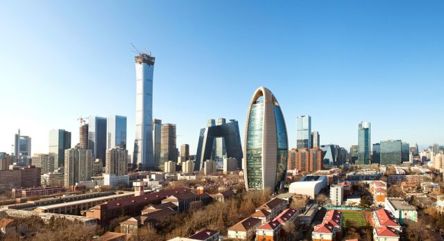
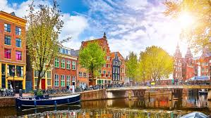

New York City
The city where it all began- I was born here and grew up in a suburb about 30 minutes away, visting often. I also lived here as an adult. In my (biased opinion) New York is the greatest city in the world, and has an almost endless amount to offer. I'm grateful to have had the chance to see numerous Broadway and off-Broadway shows, visit lots of museums, and try many diffent resturuants as well as just walk around the city and take in the sites and I definitely miss living nearby!

Beijing, China
I was fortunate enough to live in one of the world's oldest city for 4 months when I studied abroad in college. Although the city has its challenges (polution chief among them)getting a chance to experience and learn about so much history and also view first hand the dicotomy between the old and the new as the city rapidly modernizes was a unique experience. China's second largest city, Beijing is also a great base for travel to other cities in China and I got the chance to visit other cities like Xi'an while I was there as well.
London, England
I've had the chance to visit London a couple of times so far and while I haven't spent extensive time in the city, I've loved it when I've been there. There is a ton to do and experience: a lot of history, a true international hub with lots of different cultures represented, and a great place to stay while you take day trips to other parts of England/the UK.

Amsterdam, The Netherlands
Similar to London, Amsterdam isn't a city I've had the chance to spend a ton of time in but it was great to visit. I love the look and feel of the city with the canals. There are a number of great museums and a lot to explore. I also had a great time partying there when I took a post college graduation trip with friends!
Washington, DC
Our nation's capital- I visisted DC multiple times as a kid and loved it. I originally wanted to attend college here and though I ended up opting to go somewhere else, my sister went to Georgetown and settled down here after. My parents now live a few hours south as well, so I get the chance to go visist regularly! I love the different neighborhoods and the amazing museums and sites DC has to offer.